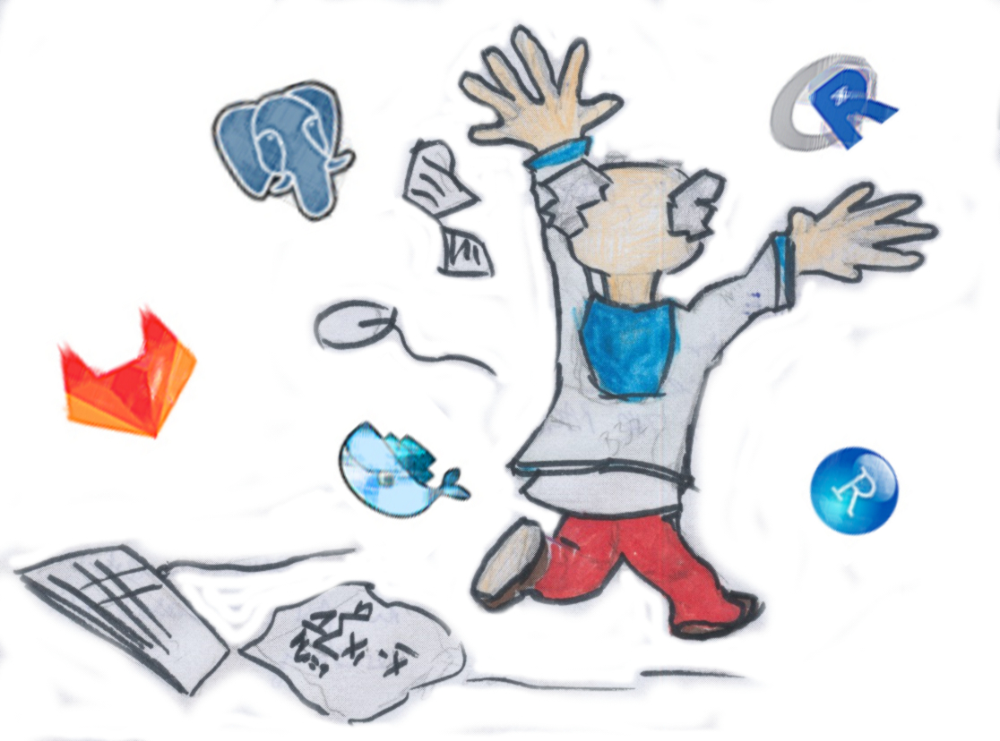
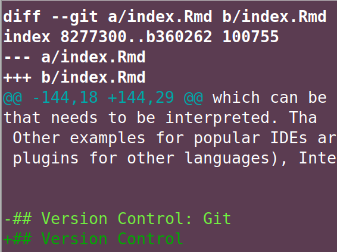

| Component | Choice |
|---|---|
| Interpreter / Language | R, Python, Javascript |
| IDE / Editor | R Studio,VS Code, Sublime |
| Version Control | Git |
| Project Management | GitHub, GitLab |
| Database | PostgreSQL |
| 'Virtual' Environments | Docker |
| Communication (Visualization, Web) | Node, Quasar (vue.js) |
| Website Hosting | Netlify, GitHub Pages |
| Workflow Automation | Apache Airflow |
| Continous Integration | GitLab CI |
2 Stack - A Developer’s Toolkit
The goal of this chapter (and probably the most important goal of this entire book) is to help you with the big picture of which tool does what. The following sections will group common programming-with-data components by purpose. All of the resulting groups represent aspects of programming with data and I will move on to discuss these groups in a dedicated chapter each.

Just like natural craftsmen, digital carpenters depend on their toolbox and their mastery of it. A project’s stack is what developers call the choice of tools used in a project. Even though different flavors come down to personal preferences, there is a lot of common ground in programming with data stacks. Below are some of the components I use most often. Of course this is a personal choice. Obviously, I do not use all of these components in every single small project. Git, R and R Studio would be a good minimal version.
Throughout this book, often a choice for one piece of software needs to be made in order to illustrate things. To get the most out of the book, keep in mind that these choices are examples and try to focus on the role of an item in the big picture.
2.1 Programming Language
In Statistical Computing the interface between the researcher and the computation node is almost always an interpreted progamming language as opposed to a compiled one. Compiled languages like C++ require the developer to write source code and compile, i.e., translate source code into what a machine can work with before runtime. The result of the compilation process is a binary which is specific to an operating system. Hence you will need one version for Windows, one for OSX and one for Linux if you intend to reach a truly broad audience with your program. The main advantage of a compiled language is speed in terms of computing performance because the translation into machine language does not happen during runtime. A reduction of development speed and increase in required developer skills are the downside of using compiled languages.
Big data is like teenage sex: everyone talks about it, nobody really knows how to do it, everyone thinks everyone else is doing it, so everyone claims they are doing it.
– Dan Ariely, Professor of Psychology and Behavioral Economics, on twitter
The above quote became famous in the hacking data community, not only because of the provocative, fun part of it, but also because of the implicit advice behind it. Given the enormous gain in computing power in recent decades, but also methodological advances, interpreted languages are often fast enough for many social science problems. And even if it turns out, your data grow out of your setup, a well written proof of concept written in an interpreted language can be a formidable blueprint. Source code is turning into an important scientific communication channel. Put your money on it, your interdisciplinary collaborator from the High Performance Computing (HPC) group, will prefer some Python code as a briefing for their C++ or FORTRAN program over a wordy description out of your field’s ivory tower.
Interpreted languages are a bit like pocket calculators, you can look at intermediate results, line by line. R and Python are the most popular OSS choices in hacking with data, Julia is an up and coming, perfomance focused language with a much slimmer ecosystem. A bit of Javascript can’t hurt for advanced customization of graphics and online communication of your results.
2.2 Interaction Environment
While the fact that a software developer needs to choose a programming language to work with is rather obvious, the need to compose and customize an environment to interact with the computer is much less obvious to many. Understandably so, because outside of programming, software such as word processors, video or image editors presents itself to the user as a single program. That single program
takes the user’s input, processes the input (in memory) and stores a results on disk for persistence – often in a proprietary, program specific format.
Yet, despite all the understanding for nonchalantly saying we keep documents in Word or data in R Studio, it’s beyond nerdy nitpicking when I insist that data are kept in files (or databases) – NOT in a program. And that R is NOT R Studio: This sloppy terminology is contributes to making us implicitly accept that our office documents live in one single program. (And that there is only one way to find and edit theses files: through said program).
It is important to understand that source code of essentially any programming languages is a just a plain text file and therefore can be edited in any editor. Editors come in all shades of gray: from lean, minimal code highlighting support to full fledged integrated development environments (IDE) with everything from version control integration to sophisticated debugging.
Which way of interaction the developer likes better is partly a matter of personal taste, but it also depends on the programming language, the team’s form of collaboration and size of the project. In addition a customized editor, most developers use some form of a console to communicate with their operating system. The ability to send commands instead of clicking is not only reproducible and shareable it also outpaces mouse movement by lot when commands come in batches. Admittedly configuration, practice and getting up to speed takes its time but once you have properly customized the way you interact with your computer when writing code you will never look back.
In any case, make sure to customize your development environment: choose the themes you like, make sure the cockpit you spent your day in is configured properly and feels comfy.
2.3 Version Control
To buy into the importance of managing one’s code professionally may be the single most important take away from this book. Being able to work with version control will help you fit into a lot of different teams that have contact points with data science and programming, let alone if you become part of a programming or data science team.
While version control has a long history dating back to CVS and SVN, the good news for the learner is, that there is a single dominant approach when it comes to version control in the data analysis world. Despite the fact that its predecessors and alternatives such as mercurial are stil around, git is the one you have to learn. To learn more about the history of version control and approaches other than git, Eric Sink’s Version Control by Example is for you.
So what does git do for us as researchers? How is it different from dropbox?
git does not work like dropbox. git does not work like dropbox.
git does not work like dropbox. git does not work like dropbox.
git does not work like dropbox. git does not work like dropbox.
git does not work like dropbox. git does not work like dropbox.
git does not work like dropbox. git does not work like dropbox.
git does not work like dropbox. git does not work like dropbox.
The idea of thinking of a sync, is what interferes with comprehension of the benefit of version control (which why I hate that git GUIs call it ‘sync’ anyway to avoid irritation of user’s initial believes.). Git is a decentralized version control system that keeps track of a history of semantic commits. Those commits may consist of changes to multiple files. A commit message summarizes the gist of a contribution. Diffs allow to compare different versions.

The diff output shows an edit during the writing of this book. The line preceeded by ‘-’ was replaced with the line preceeded by ‘+’.
Git is well suited for any kind of text file. May it be source code from Python or C++, or some text written in markdown or LaTeX. Binaries like .pdfs or Word documents are possible, too, but certainly not the type of file for which git is really useful. This book contains a detailed, applied introduction tailed to researchers as part of the Programmers’ Practices and Workflows chapter, so let’s dwell with the above contextualization for a bit.
2.4 Data Management
One implication of bigger datasets and/or bigger teams is the need to manage data. Particularly when projects establish themselves or update their data on a regularly basis, well defined processes, consistent storage and possibly access management become relevant. But even if you worked alone, it can be very helpful to have an idea about data storage in files systems, memory consumption and archiving data for good.
Data come in various forms and dimensions, potentially deeply nested. Yet researchers and analysts are mostly trained to work with one-row-one-observation formats in which columns typically represent different variables. In other words two dimensional representation of data remains the most common and intuitive form of data to many. Hence office software offers different, text based and proprietary spreadsheet file formats. On disk, comma separated files (.csv)1 are probably the purest representation of two dimensional data that can processed comfortably by any programming language and be read by many programs. Other formats such as .xml or .json allow to store even deeply nested data.
In-memory, that is when working interactively with a programming languages such as R or Python, data.frames are the most common represenation of two dimensional data. Data.frames, their progressive relatives like tibbles or data.tables and the ability to manipulate them in reproducible, shareable and discussible fashion is is the first superpower upgrade over pushing spreadsheets. Plus, other representation such as arrays, dictionaries or lists represent nested data in memory. Though in memory data manipulation is very appealing, memory is limited and needs to be managed. Making the most of the memory available is one of the driving forces behind extensions of the original data.frame concept.
The other obvious limitation of data in memory is the lack of persistent storage. Therefore in-memory data processing needs to be combined with with file based storage are a database. The good news is, languages like R and Python are well equipped to interface with a plethora of file based approaches as well as databases. So well, that I often recommend these languages to researchers who work with other less equipped tools, solely as an intermediate layer.
To evaluate which relational (essentially SQL) or non-relational database to pick up just seems like the next daunting task of stack choice. Luckily, in research first encounters with a database are usually passive, in the sense that you want to query data from a source. In other words the choice has been made for you. So unless you want to start your own data collection from scratch, simply sit back, relax and let the internet battle out another conceptual war. For now, let’s just be aware of the fact that a data managemnt game plan should be part of any analysis project.
2.5 Infrastructure
For researchers and business analysts who want to program with data the starting infrastructure is very likely their own desktop or notebook computer. Nowadays this already means access to remarkable computing power suited for many tasks.
Yet, it is good to be aware of the many reasons that can turn the infrastructure choice from a no-brainer into a question with many options and consequences. Computing power, repeated or scheduled tasks, hard-to-configure or non-compatible runtime environment, online publication or high availability may be some of the needs that make you think about infrastructure beyond your own notebook.
Today, thanks to software-as-a-service (SaaS) offers and cloud computing, none of the above needs imply running a server let alone a computing center on your own. Computing has not only become more powerful over the last decade but also more accessible. Entry hurdles are lower than ever. Many needs are covered by services that do not require serious upfront investment. It has become convenient to try and let the infrastructure grow with the project.
From a researchers’ and analysts’ perspective one of the most noteworthy infrastructure developments of recent may be the arrival of containers in data analysis. Containers are isolated, single purpose environments that run either on a single container host or with an orchestrator in a cluster. Albeit technically different from virtual machines we can regard containers as virtual computers running on a computer for now. With containers data analysts can create isolated, single purpose environments that allow to reproduce analysis even after one’s system was upgraded and with it all the libraries used to run the analysis. Or think of some exotic LaTeX configuration, Python environment or database drivers that just can’t manage to run on your local machine. Bet there is container blueprint (aka image) around online for exactly this purpose.
“Premature optimization is the root of all evil.” – Donald Knuth.
On the flipside, product offerings and therefore our options have become a fast growing, evolving digital jungle. So rather than trying to keep track (and eventually loosing it) of the very latest gadgets, this book intends to show a big picture overview and pass on a strategy to evaluate the need to add to your infrastructure. Computing power, availability, specific services and collaboration are the main drivers for researcher to look beyond their own hardware. Plus, public exposure, i.e., running a website as discussed in the publishing section asks for a web host beyond our local notebooks.
2.6 Automation
“Make repetitive work fun again!” could be the claim of this section. Yet, it’s not just the typical intern’s or student assistant’s job that we would love to automate. Regular ingestion of data from an API or a web scraping process are one form of reocurring tasks, often called cron jobs after the Linux cron command which is often used to schedule execution of any Linux command. Regular computation of an index, triggered by incoming data would be a less time focused, but more event triggered example of an automated task.
The one trending form of automation though, is continuous integration / continuous development (CI/CD). CI/CD processes are typically closely linked to a git version control repository and are triggered by a particular action done to the repository. For example, in case some pre-defined part (branch) of a git repository gets updated, an event is triggered and some process starts to run on some machine (usually some container). Builds of software packages are very common use cases of such a CI/CD process. Imagine your developing an R package and want to run all the tests you’ve written, create the documentation and test whether the package can be installed. Once you’ve made your changes and push to your remote git repository. Your push triggers the tests, the check, the documentation rendering and the installation. Potentially a push to the main branch of your repository could even deploy a package that cleared all of the above to your production server.
Rendering documentation, e.g., from markdown to HTML into a website or presentation or a book like this one is a very similar example of CI/CD process. Major git providers like Gitlab (Gitlab CI/CD) or GiTHub (GitHub Actions) offer CI/CD tool integration. In addition, standalone services like circle-ci can be used as well open source, self-hosted software like drone.
2.7 Communication Tools
Its community is one of the reasons for the rise of open source software over the last decades. Particularly newcomers would miss a great chance for a kickstart into programming if they did not connect with the community. Admittedly, not all of the community’s communication habits are for everyone, yet it is important to make your choices and pick up a few channels.
Chat clients like Slack, Discord or the Internet Relay Chat (IRC) (for the pre-millenials among readers) are the most direct form of asynchronous communication. Though many of the modern alternative are not opensource themselves, they offer free options and remain popular in the community despite self-hosted approaches such as matrix along with element. Many international groups around data science and statistical computing such as RLadies or the Research Software Enginnering society have Slack space that are busy 24/7 around the world.
Social media is less directed and more easily consumed in passive fashion than chat space. Twitter is a very active resource to find and exchange good reads or online tutorials. LinkedIn is another good option to connect and find input, particularly in parts of the world where Twitter is less popular. Due to its activity social media is also a great way to stay up-to-date with the latest development.
Mailing lists are another more old fashioned form to discuss things. They do not require a special client but just an email address to subscribe to their regular updates. If you intend to avoid social media as well as signing up at knowledge sharing platforms such as stackoverflow.com or reddit mailing lists are a good way to get help from experienced developers.
Issue trackers are one form of communication that is often underestimated by newcomers. Remotely hosted git repositories, e.g., repositories hosted at GitHub or Gitlab, typically come with an integrated issue trackers to report bugs. The community discusses a lot more than problems on issue trackers: feature requests are common use case and even the future direction of an open source project may be affected substantially by discussions in its issue tracker.
2.8 Publishing and Reporting
Data analysis hopefully yields results that the analyst intends to report internally within their organisation or share with the broader public. This has lead to a plethora of options on the reporting end. Actually data visualization and reproducible, automated reporting is one of the main drivers researchers and analysts turn to programming for their data analysis.
In general we can distinguish between two forms of output: pdf-like, print oriented output and HTML-centered web content. Recent toolchains have enabled analysts without strong backgrounds in web frontend development (HTML/CSS/Javascript) to create nifty reports and impressive, interactive visualizations. Frameworks like R Shiny or Python Dash even allow to create complex interactive websites with data science environment.
Notebooks that came out of the Python world established themselves in many other languages implementing the idea of combining text with code chunks that get executed when the text is rendered to HTML or PDF. This allows researchers to describe, annotate and discuss results while sharing the code that produced the results described. In academia, progressive scholars and journals embrace this form of creating manuscripts as reproducible research that improves trust in the presented findings.
Besides academic journals that start to require researchers to hand in their results in reproducible fashion, reporting based on so called static website generators2 has taken data blogs and reporting outlet including presentations by storm. Platforms like GitHub render markdown files to HTML automatically, displaying formatted plain text as a decent website. Services such as netlify allow to use a broad variety of build tools to render input that contains text and code.
Centered around web browsers to display the output, HTML reporting allows to create simple reports, blogs, entire books (like this one) or presentation slides for talks. But thanks to documented converters like pandoc and a typesetting juggernaut called LaTeX, rendering sophisticated .pdf is possible, too. Some environments even allow to render to propietary word processesor formats.
Some dialects use different separators like ‘;’ or tabs, partly because of regional differences like the use of commas as decimal delimiters.↩︎
As opposed to content management systems (CMS) that keep content in a database and put content and layout template together when users visit a website, static website generators render a website once triggered by an event. If users want to update a static website, they simply re-run the render process and push the HTML output of said process online.↩︎